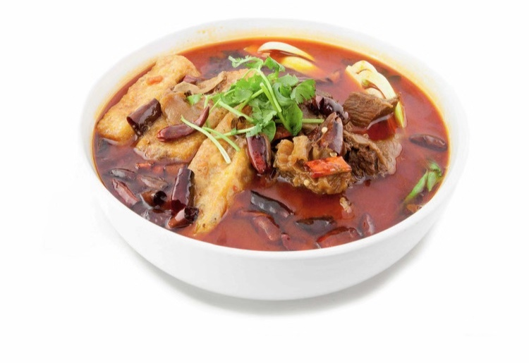
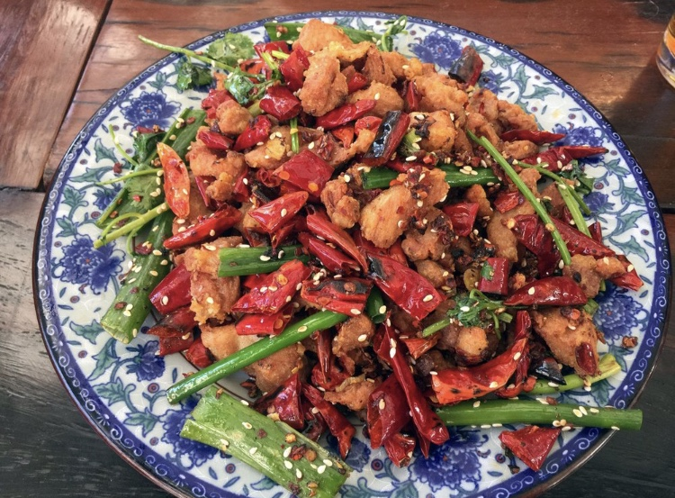
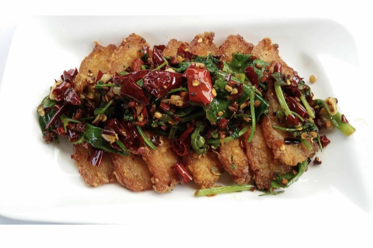
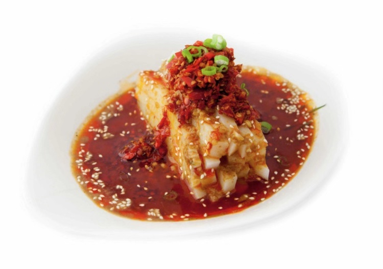

Eating at Chinese resturant, belows are my
favourite dishes,I love spicy! I have to eat Chinese food once a week because it will taste like home.
Szechuan Lamb Hot Pot: When winter is coming, having a lamb hot pot can keep me warm for all day!

Kong Pao Chicken: This dish is very famous in my hometown, the chicken is crispy.

Double Cooked Pork:The reason why this dish called double cooked pork is becuase this dish need to stir fry twice in order to make the prok more flavorful.

Fiery Rice Stalks:This dish has another name "sad rice stalks." Because this dish is super spicy and people who eat this will ba hot and tears.

My travel experience in 2018!
I went to Puerto Rico last spring break with my friends. We spent five days in San Juan and two days in Vieques island, I have never been to such a beautiful place! We visit historic castles and colourful San Juan city, We went to flamenco which is the second most beautiful beach in the world. We ate traditional Caribbean cuisine and met ethusiastic Latinos. The only pity is that we went to the fluorescent lake, because of the huricane problem was not as beautiful as before.
This is the video by the castle:
This is the Video by the San Juan :
The most unforgettable experiences is I took a helicopter! I was scared, but it was nice to see the sea and the view below.